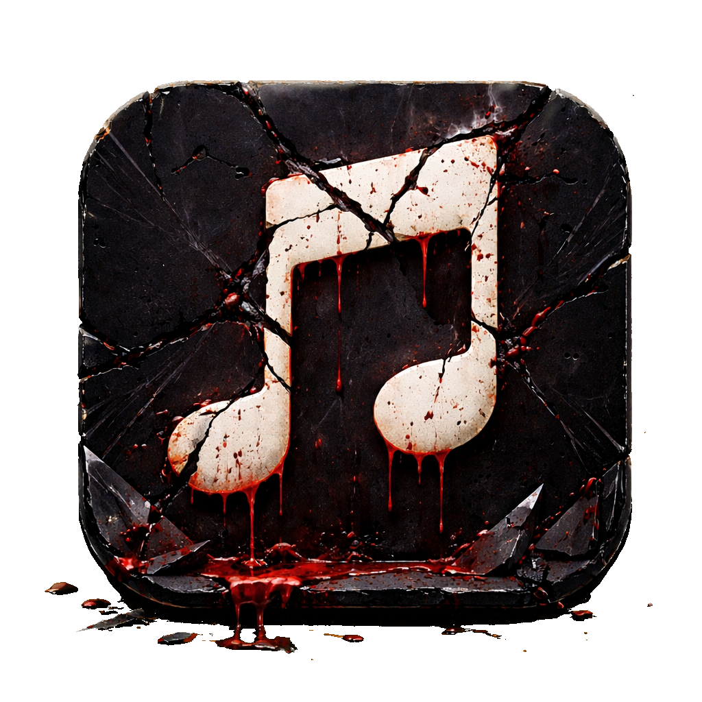

Apple Music keeps opening automatically on your Mac. When you connect AirPods. When you press play. When you breathe near your Mac. Stop it permanently with one command. Zero CPU. Works every time.
Install Free from GitHub →or run one command
git clone https://github.com/beausterling/kill-apple-music.git && cd kill-apple-music && bash install.sh
If Apple Music keeps opening automatically on your Mac, you're not alone. Apple designed Music.app to launch in response to media events — and there's no built-in setting to turn it off.
Connecting AirPods or any Bluetooth headphones triggers Apple Music to launch and auto-play.
Pressing the media key on your keyboard or Touch Bar opens Music, even if you use Spotify.
Ending a phone call or switching audio can wake Music.app on your Mac through Handoff.
Some users report Apple Music opening unprompted — at startup, after sleep, or at random.
Apple considers this intentional behavior, not a bug. No checkbox in System Settings will disable it. That's why Kill Apple Music exists.
Kill Apple Music is a tiny compiled Swift binary that uses macOS native APIs to permanently prevent Apple Music from opening. Zero polling. Zero CPU. Pure event-driven execution.
Uses NSWorkspace.didLaunchApplicationNotification — the same native API macOS uses internally. Zero CPU while waiting.
The moment Apple Music tries to open — from any trigger — the binary is notified by the system.
Music.app is terminated immediately. No window appears. No audio plays. It never fully launches.
A macOS LaunchAgent starts it at login and keeps it running. Survives restarts. Survives macOS updates. Set it and forget it.
There are other ways to stop Apple Music from auto-launching on Mac. Here's how Kill Apple Music compares.
| Feature | Kill Apple Music | noTunes | Manual Fix |
|---|---|---|---|
| Stops all triggers | Yes | Yes | Partial |
| Zero CPU while idle | Yes | No (polls) | N/A |
| One command install | Yes | Homebrew | No |
| No menu bar icon | Yes | No | N/A |
| Intel + Apple Silicon | Native | Universal | N/A |
| Open source | MIT | MIT | N/A |
| Survives macOS updates | Yes | Yes | Often breaks |
Apple Music auto-launches in response to media events: connecting AirPods or Bluetooth headphones, pressing the play/pause key, Handoff from iPhone, or macOS restarting with "Reopen windows" enabled. Apple considers this intentional behavior — there is no built-in setting to disable it.
Install Kill Apple Music with one command: git clone https://github.com/beausterling/kill-apple-music.git && cd kill-apple-music && bash install.sh. It runs silently in the background, catches Music.app the instant it tries to launch, and kills it. Works across restarts.
Yes. Kill Apple Music works on macOS 12 (Monterey) and later, including Ventura, Sonoma, and Sequoia. It compiles from Swift source on your machine, so it's always compatible with your macOS version and CPU — Intel or Apple Silicon.
Yes. Kill Apple Music catches Music.app the instant it tries to open, regardless of the trigger — AirPods, Bluetooth headphones, the play/pause key, Handoff, or anything else. Music.app is terminated before it fully loads.
Kill Apple Music is event-driven — it uses macOS native notifications to react instantly, using zero CPU while idle. noTunes uses polling (checks every second). Kill Apple Music compiles natively on your machine, requires no menu bar icon, and installs with a single terminal command.
Run ~/.kill-apple-music/uninstall.sh in Terminal. This removes the background agent and all installed files. Apple Music will launch normally again.